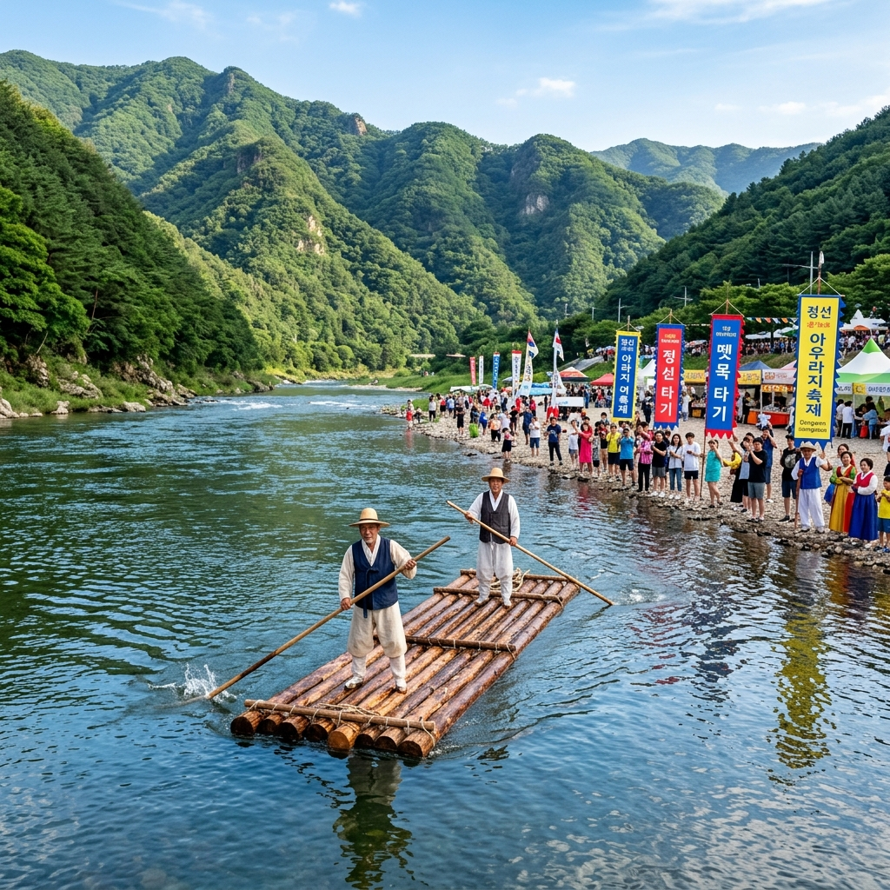
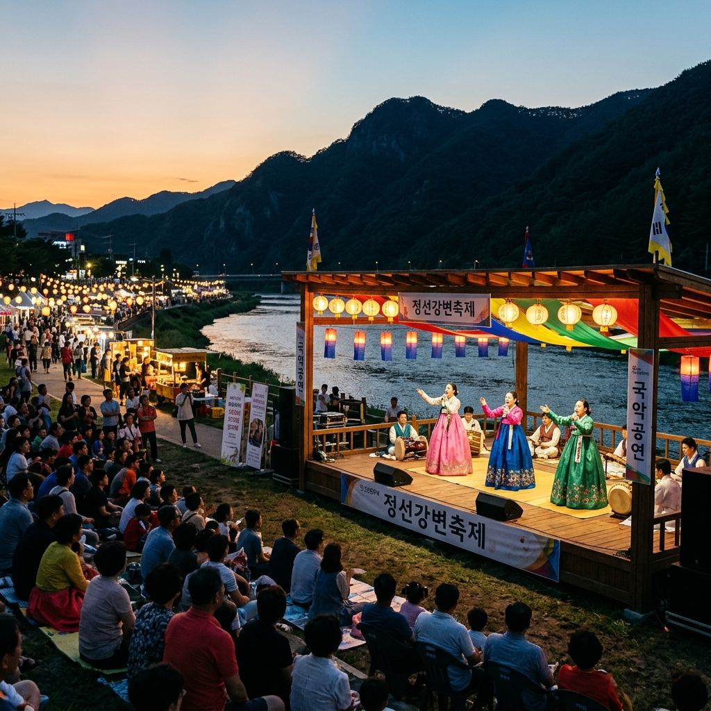
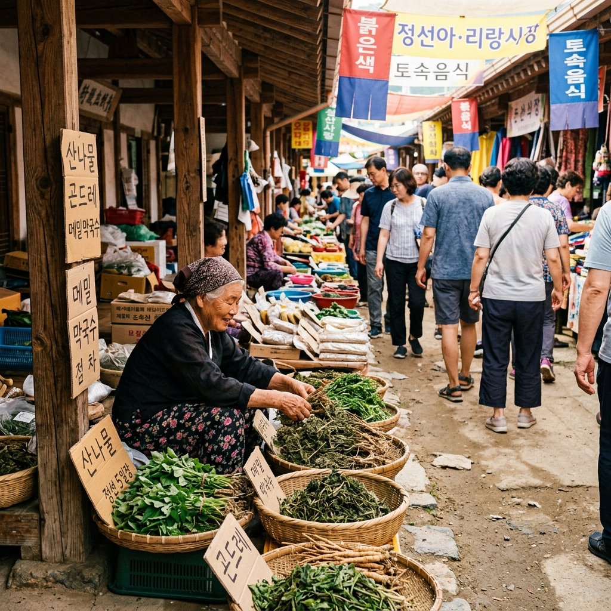

정선 아우라지 뗏목축제 2026 — 정선아리랑 발원지 전통 뗏목 시연과 정선 5일장 연계 완전 가이드
강원도 정선 아우라지는 골지천과 송천이 한 몸으로 합쳐지는 합류 지점을 뜻하는 순우리말입니다. '아우러진다'는 말에서 나온 이 이름처럼, 아우라지는 두 물줄기가 만나 하나의 강이 되는 자연의 드라마가 펼쳐지는 곳입니다. 동시에 이 강은 조선 시대 뗏목꾼들이 나무를 엮어 한양으로 띄워 보내던 역사적인 수운(水運)의 길이기도 합니다. 매년 8월 초에는 이 전통을 기리는 아우라지 뗏목축제가 열리며, 정선아리랑 공연과 함께 강원 최대의 여름 문화 축제로 자리매김해 왔습니다. 2026년 제34회 축제를 앞두고 미리 준비해야 할 모든 것을 이 글에서 안내해 드립니다.
🚣 아우라지와 뗏목 — 정선아리랑에 담긴 이별의 강
아우라지는 단순한 지리적 명소가 아닙니다. 이 강변에는 수백 년의 한(恨)과 기다림이 녹아 있습니다. 조선 시대 뗏목꾼들은 정선의 깊은 산속에서 벤 굵은 소나무들을 엮어 뗏목을 만들고, 아우라지에서 뗏목을 띄워 남한강을 따라 서울 마포나루까지 수개월에 걸쳐 내려갔습니다. 뗏목꾼이 없는 그 긴 시간 동안 집에 홀로 남은 아내나 임이 부른 노래가 바로 정선아리랑의 원형이라고 전해집니다.
"아우라지 뱃사공아 배 좀 건네줘요, 싸리골 올동박이 다 떨어진다"는 정선아리랑의 대표 가사는 강 하나를 사이에 두고 만나지 못하는 연인의 안타까움을 담고 있습니다. 뗏목꾼들이 강물을 따라 떠나던 그 아우라지 나루터에는 현재 작은 아우라지 처녀 동상이 세워져 있으며, 6월의 신록 속에서 보는 처녀상의 아련한 표정은 이 공간의 역사적 서사를 온전히 전달합니다.
아우라지는 정선읍에서 차로 약 40분 거리의 여량면에 위치하며, 강변에는 전통 나룻배와 뗏목 체험 시설, 정선아리랑비, 아우라지 캠핑장 등이 마련되어 있어 연중 방문이 가능한 여행지입니다.

정선 아우라지 — 전통 뗏목 시연과 산간 계곡의 여름 풍경 / AI 제작 이미지
📅 2026년 제34회 아우라지 뗏목축제 개요
아우라지 뗏목축제는 2025년에 제33회를 맞아 8월 1일~2일 여량면 아우라지 일원에서 성황리에 개최되었습니다. 2026년 제34회 축제도 같은 시기인 2026년 8월 초(예상: 8월 1일~2일 또는 7일~8일)에 열릴 예정입니다. 공식 일정은 축제 개최 약 2~3개월 전 정선군청 문화관광과 및 정선군 공식 SNS 채널을 통해 발표됩니다.
⚠️ 주의: 2026년 제34회 뗏목축제의 정확한 날짜는 이 글 작성 시점(2026년 5월)에 아직 공식 발표되지 않았습니다. 방문 전 반드시 정선군 문화관광 홈페이지(tour.jeongseon.go.kr) 또는 정선군청(033-560-2366)에서 최신 일정을 확인하시기 바랍니다.
| 구분 |
내용 |
| 행사명 |
제34회 아우라지 뗏목축제 (예정) |
| 예정 일시 |
2026년 8월 초 (예년 기준 1~2일간 진행) |
| 장소 |
강원특별자치도 정선군 여량면 아우라지 일원 |
| 주최·주관 |
정선군 / 여량면 주민자치회 |
| 입장료 |
무료 (일부 체험 프로그램 유료) |
| 공식 일정 확인 |
tour.jeongseon.go.kr |
🎪 주요 프로그램 — 뗏목부터 아리랑 공연까지
아우라지 뗏목축제의 프로그램은 크게 전통 시연, 체험 활동, 공연으로 나뉩니다.
뗏목 시연 및 제례: 축제의 핵심 프로그램입니다. 전통 방식으로 제작된 통나무 뗏목이 강을 따라 시연되며, 뗏목 출발 전에는 강의 안녕과 뱃사공의 무사를 기원하는 제례 의식이 엄수됩니다. 과거 수백 년의 수운 문화를 현장에서 직접 목격하는 감동적인 장면입니다.
정선아리랑 공연: 정선아리랑 명창들의 공연이 아우라지 강변 야외 무대에서 펼쳐집니다. 강물 소리와 산의 메아리를 배경으로 울려 퍼지는 아리랑 선율은 도시 공연장에서는 결코 경험할 수 없는 감동을 선사합니다.
체험 프로그램: 이동식 뗏목 탑승 체험, 나룻배 타기, 물수제비 던지기, 떡메치기, 짚풀공예, 민속놀이 등 남녀노소 누구나 참여할 수 있는 다양한 프로그램이 운영됩니다.

아우라지 뗏목축제 — 강변 야외무대 정선아리랑 공연 / AI 제작 이미지
🛒 정선 5일장 — 축제와 함께 즐기는 강원 최대 전통시장
아우라지 뗏목축제 방문 계획을 세울 때 반드시 함께 확인해야 할 것이 정선 5일장 날짜입니다. 정선 5일장은 매달 날짜 끝자리가 2나 7인 날, 즉 2일, 7일, 12일, 17일, 22일, 27일에 정선읍 동강변 일대에서 열립니다.
정선 5일장은 단순한 재래시장이 아닙니다. 강원도 산간 지역에서 채취한 곤드레나물·더덕·산더덕·잔대·도라지 등의 신선한 산나물과, 정선 특산 메밀 음식(메밀전·메밀묵), 콧등치기 국수, 황기족발, 올챙이묵 등을 현장에서 맛볼 수 있는 강원도 먹거리의 천국입니다.
장날 기준으로는 장 규모가 크게 열리며, 전국 각지에서 구경 온 방문객들로 평일에도 상당히 북적입니다. 뗏목축제 일정과 정선 5일장 날짜가 겹치는 날에 방문하면 두 가지를 한꺼번에 즐길 수 있어 가장 알찬 정선 방문이 됩니다.
🚂 정선으로 가는 법 — 아리랑열차와 자가용 비교
정선은 서울에서 대중교통으로 접근하기 다소 시간이 걸리지만, 그 여정 자체가 여행의 일부가 되는 곳입니다.
아리랑열차(관광열차): 청량리역 출발, 아우라지역 종착. 주말·공휴일 운행. 예약 필수이며 코레일(korail.go.kr)에서 예약. 편도 약 4시간 30분 소요. 구불구불한 산악 철도를 따라 정선 협곡 풍경을 차창 밖으로 감상할 수 있어 인기 높습니다.
자가용: 서울 → 중앙고속도로 → 제천IC → 38번 국도 → 정선읍 → 여량면 아우라지. 약 3시간 내외 소요. 자가용이 가장 편리하며 여량면 아우라지 인근 공영주차장(무료)을 이용할 수 있습니다.
💡 숙박 팁: 축제 기간에는 정선읍 내 숙소가 빠르게 마감됩니다. 아우라지 캠핑장(사전 예약 필수)이나 정선읍 모텔을 최소 1~2개월 전에 예약하시기 바랍니다. 민박의 경우 여량면 현지 주민이 운영하는 곳들이 저렴하고 정겨운 분위기를 제공합니다.
🍽️ 정선 먹거리 완전 정복 — 콧등치기 국수부터 황기족발까지
정선 방문에서 먹거리를 빼면 이야기가 되지 않습니다. 정선은 강원도 산간 지역 특유의 향토 음식이 살아 있는 몇 안 되는 고장입니다.
콧등치기 국수: 메밀가루로 만든 굵은 면이 국물에 담겨 나오며, 슬슬 먹다 보면 면이 코끝에 닿는다 하여 붙은 이름입니다. 구수한 들깨 육수와 투박하지만 쫄깃한 메밀면의 조합이 정선의 대표 음식입니다.
곤드레나물밥: 강원도 곤드레(고려 엉겅퀴)를 넣고 지은 영양밥에 참기름 양념장을 비벼 먹는 정선의 소울 푸드입니다. 5일장 인근 국밥집에서 1인 9,000~12,000원에 즐길 수 있습니다.
황기족발: 황기(黃芪)라는 약재를 넣고 삶아낸 족발로, 한방 향이 은은하게 스며들어 일반 족발과는 전혀 다른 깊은 맛을 자랑합니다. 정선읍 시내 전문점에서 맛볼 수 있습니다.
⛺ 아우라지 캠핑장 & 래프팅 연계 코스
뗏목축제 외에 아우라지를 방문하는 또 다른 이유는 동강 래프팅입니다. 아우라지에서 출발하는 동강 래프팅 코스는 평균 8~10km 구간으로, 급류와 여울, 고요한 평수면이 번갈아 이어지는 강원 최고의 래프팅 코스입니다. 6월 중순부터 래프팅 시즌이 본격화되며, 인근 래프팅 업체에서 장비 일체를 포함해 1인 30,000~45,000원에 체험할 수 있습니다.
아우라지 캠핑장은 강변에 위치한 자연 친화형 캠핑 시설로, 텐트 사이트와 카라반 사이트를 모두 갖추고 있습니다. 별이 잘 보이기로 유명한 정선의 밤하늘을 배경으로 하는 강변 캠핑은 뗏목축제 이후 2박 3일 일정을 충실하게 채워줍니다.

정선 5일장 — 산나물·메밀·향토 특산물이 가득한 강원 전통시장 풍경 / AI 제작 이미지
📝 정선 아우라지 방문 핵심 요약
| 항목 |
내용 |
| 뗏목축제 예정 시기 |
2026년 8월 초 (공식 발표 후 확인 필수) |
| 정선 5일장 날짜 |
매달 끝자리 2·7일 (2, 7, 12, 17, 22, 27일) |
| 아우라지 위치 |
강원특별자치도 정선군 여량면 아우라지길 (여량면) |
| 서울~아우라지 |
자가용 약 3시간 / 아리랑열차 약 4시간 30분 |
| 추천 일정 |
정선 5일장 오전 → 아우라지 탐방 오후 → 래프팅 또는 캠핑 |
#아우라지뗏목축제
#정선여행
#정선아리랑
#정선5일장
#동강래프팅
#강원여행
#여름축제
#전통뗏목
#정선군
#국내여행